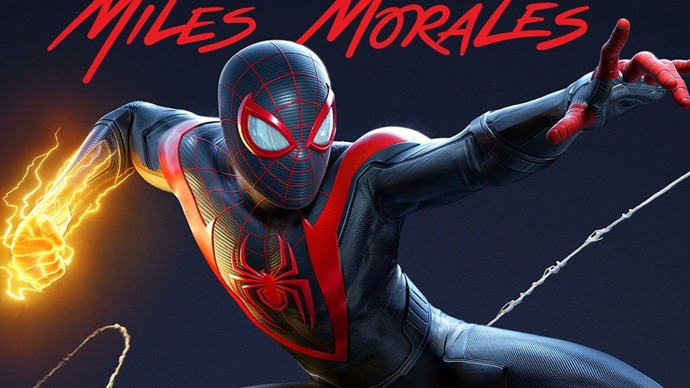
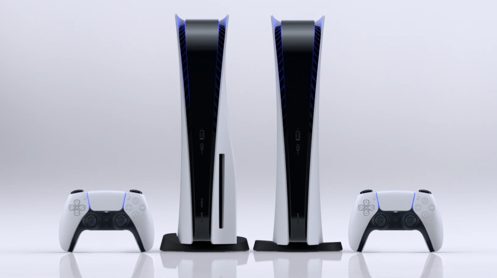

What do you get with the PS5? By Andrew Griffin
Sony’s new PlayStation 5 will finally arrive in the hands of customers across the UK and elsewhere.
It brings an end to a long roll-out process that has seen the console slowly revealed and released. But it starts a new process of getting to grips with the new console, and for others looking to find them.
If you are lucky enough to have a console arriving on release date, here’s what you’ll find. And if you’re still waiting, here’s what you can look forward to getting – or not getting, if you decide it’s not what you want, perhaps because you prefer the Xbox over the PS5.
Dimensions
The PS5 is big. You’ll get a sense of that as soon as you open it up, and you’ll be reminded of it every time you play it.

The console is about 39 cm tall, 26cm deep and 8cm across.
That’s very big: it’s the biggest console in modern history. It’s much bigger than both the new Xboxes, and the PlayStations that have preceded it, too. As we wrote in our review, you’re going to have to make space for it.
(The box, when it arrives, is also very big, as you’d imagine. But it’s not quite as dramatically big as the console itself.)
Specifications
Here are the specs in numbers:
- Resolution: Up to 8K
- Frame rate: Up to 120fps
- Storage: 825GB SSD
- CPU: 8-core, 3.5GHz AMD Zen 2
- GPU: 10.3 teraflop AMD RDNA 2
- RAM: 16 GB GDDR6
In practice, that means you’ll get great performance, very fast loading screens, and all the resolution your TV is likely to support.
Accessories
There’s a lot you can get with the PS5, even with the official accessories alone: Sony is offering a charging station, a “Pulse 3D” wireless headset, a media remote and an HD camera. Add in third-party accessories and you’ll be able to get just about anything you might want, and plenty you don’t.
But none of those accessories will come with the console. In fact, you’ll get hardly anything.
The box comes with just the console itself and one controller, as well as the wires needed to connect them to power and your television. You’ll need to buy anything else you might need.
Thankfully, those are much more readily available that the consoles themselves, even when it comes to official accessories. Even the controllers can be bought fairly easily – Amazon will ship you one in just a couple of days.
Some of the first-party accessories are a little more difficult to find, such as the camera and media remote, both of which are currently also sold out. But they'll probably come into stock more quickly than the console, too.
You May also Like
 Epic Games have released a new Fortnite update.. By Yousef Saifi |
 Destiny 2 Beyond Light review in progress..By Austin Wood |
 Best Xbox Series X games.. By Vic Hood, Adam Vjestica, Stephen Lambrechts |